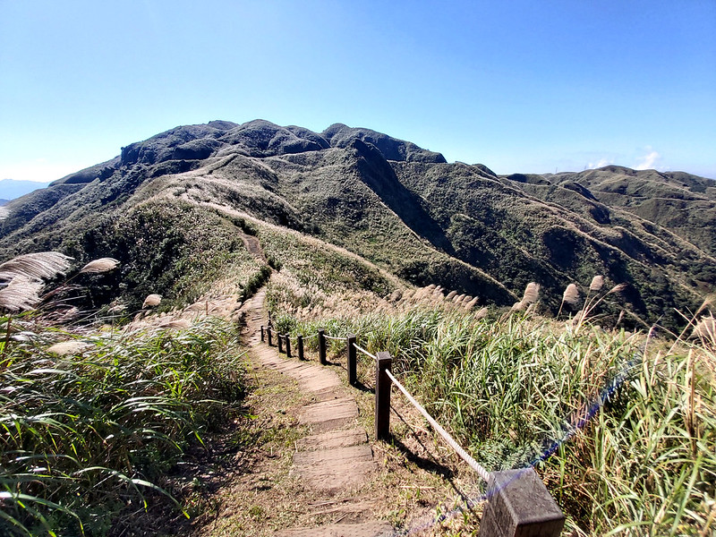
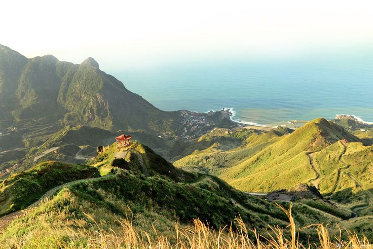

- Region
- North · New Taipei City
- Difficulty
- Moderate
- Time needed
- Full day
- Best months
- Apr–May, Sep–Nov
What to do
Wander Jiufen Old Street
Jiufen Old Street (九份老街) is a narrow, covered lane of snack stalls and shops. Go early to beat the crowds.
Shuqi Road at dusk
The steep steps of Shuqi Road (豎崎路), lined with red lanterns and teahouses, glow beautifully after dark.
Hike Teapot Mountain
From the Gold Museum in Jinguashi, the trail up Teapot Mountain (茶壺山) takes about 1–1.5 hours one way, with open views of the coast.
Visit the Gold Museum
The Gold Ecological Park (黃金博物館) in Jinguashi tells the story of the area's mining past. You can walk into an old mine tunnel.
Spot the Yin-Yang Sea
From the hills you can see the Yin-Yang Sea (陰陽海), where mineral-rich water turns part of the bay yellow.
What to eat
Taro balls 芋圓
Chewy taro and sweet potato balls in shaved ice or warm soup, the signature dessert of Jiufen.
Peanut ice cream roll 花生捲冰淇淋
Ice cream with shaved peanut brittle and coriander, wrapped in a thin crepe.
Fish ball soup 魚丸湯
Light and warming, perfect on a rainy Jiufen afternoon.
Tea at a teahouse 茶館
Sit down with a pot of Taiwanese oolong and a view over the hills and sea.
Getting there
- From Taipei Main Station, take the MRT Blue Line to Zhongxiao Fuxing (忠孝復興) station. about 10 min
- Take Keelung Bus 1062 to the Jiufen Old Street stop. about 70–90 min
- For Teapot Mountain, ride the same bus line (or a local bus) a few stops further to Jinguashi (金瓜石) and walk past the Gold Museum to the trailhead. about 10 min
- Alternative: take a TRA train to Ruifang (瑞芳), then a local bus or taxi up to Jiufen. about 45 min + 15 min
Buses back to Taipei can have long queues in the evening. Consider leaving before the crowds or going back via Ruifang station.
Best season
Spring and autumn give the best mix of mild weather and clear views. Winter brings the northeast monsoon, so Jiufen is often rainy and misty (atmospheric, but bad for hiking). Teapot Mountain has almost no shade, so summer middays are very hot.
Photos


Tips
- Avoid weekends and holidays if you can; the old street gets shoulder-to-shoulder.
- The final part of Teapot Mountain involves scrambling over rocks. Skip the top if it is wet or windy.
- Bring sun protection and plenty of water for the hike.
- Carry an umbrella. Jiufen gets rain on many days of the year.
Last checked: 2026-11. Bus routes, train times and opening hours change, so please confirm on official websites before you go.